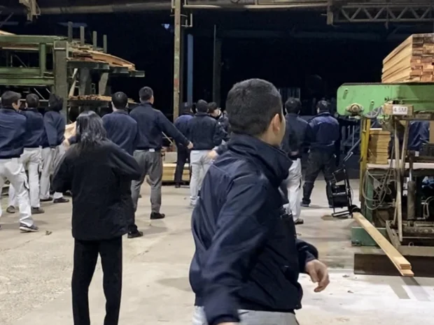
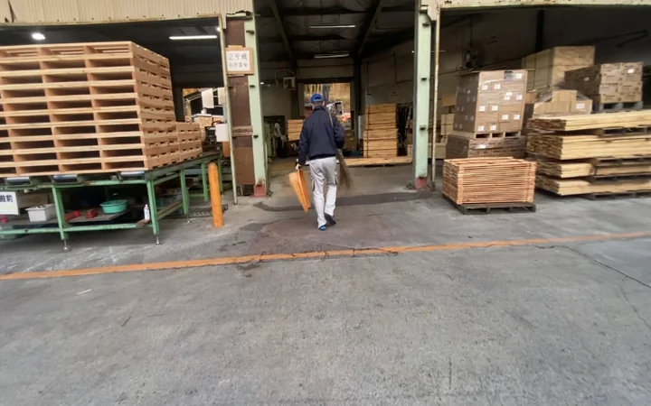
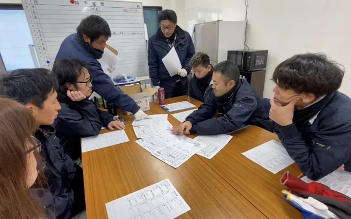
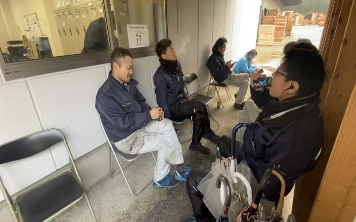
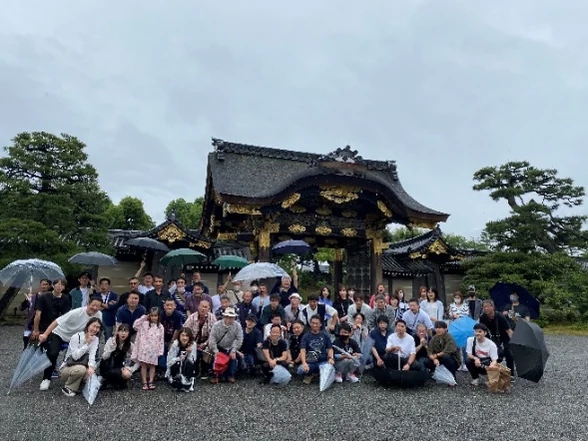
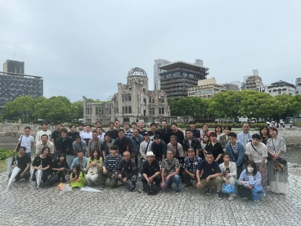
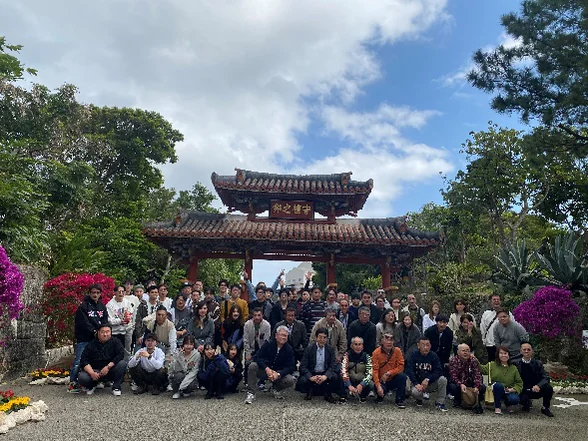

WORK STYLE
安心して、 長く働ける場所へ。
仕事の種類、1日の流れ、給与や休日、福利厚生まで。
フォレストで働く毎日を、できるだけ具体的にお伝えします。

JOBS
仕事は、大きくわけて3つ。
-
01 MANUFACTURING
製造＝ 作る
「体を動かす」
木製パレットや木箱の製作、製材など、現場でものをつくる仕事です。
-
02 SALES
営業＝ 売る
「お客様と話す」
お客様のお話を聞き、ご要望に合った製品やサービスをご提案する仕事です。
-
03 OFFICE
事務＝ 支える
「お客様・営業・製造を支える」
会社全体がスムーズに動くよう、お客様・営業・製造を支える仕事です。
A DAY
1日の流れ
出勤・朝礼
始業
休憩
昼休憩
休憩
終業




暑い時期は、職場ごとの環境に合わせて休憩を追加しています。熱中症対策について
SALARY & HOLIDAYS
給与・休日
- 賞与
- 年2回＋期末賞与1回（業績に応じて）
- 昇給
- 年1回見直し
- 評価制度
- 頑張りを評価する制度があります
- 各種手当
- 住宅・通勤・皆勤・家族・役職
- 支給
- 20日締め・月末支給
- 給与明細
- Webで確認
- 8:00〜17:00
勤務時間休憩60分
- 0日
年間休日
- 0時間以内
残業月あたり
- 0%
有給休暇の取得率
- 0歳
定年再雇用は70歳まで
GROWTH & EVENTS
研修と、社内の行事

研修
- 新人研修（社内ルール・安全など）
- 販売店による機器・設備の安全研修
- 外部講師による管理者・監督者研修
- 安全・熱中症などの社内ルールの周知
改善への取り組み
- 改善事例発表会（年1回）
- 個人改善提案
社内イベント
- 花見・スポーツ大会
- 納涼祭
- 新年会・懇親会
- 社員旅行


